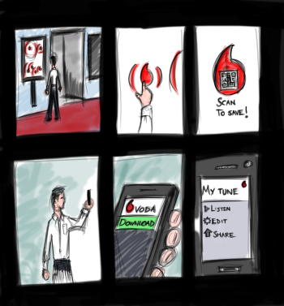

We were asked to put the expensive visual real estate in shopfronts to better use. We decided the best way to attract new business was to offer a free, engaging experience with consistent branding and a 'take away' component.
We decided to use a Vodafone store in the CBD as a hypothetical installation point.
Early on we developed storyboard concepts where pedestrians could make their own music and take it home.
We used testing and feedback to refine our concept.
Using concept-sketches, interaction models, paper-prototyping, and academic research to determine the final iteration:
The installation would track pedestrians and interact using a Microsoft Kinect.
We discovered that users preferred visualisations of the music that matched their behaviour closely.
We also found users preferred visualisations and music that felt more at home in the QVB setting we chose.